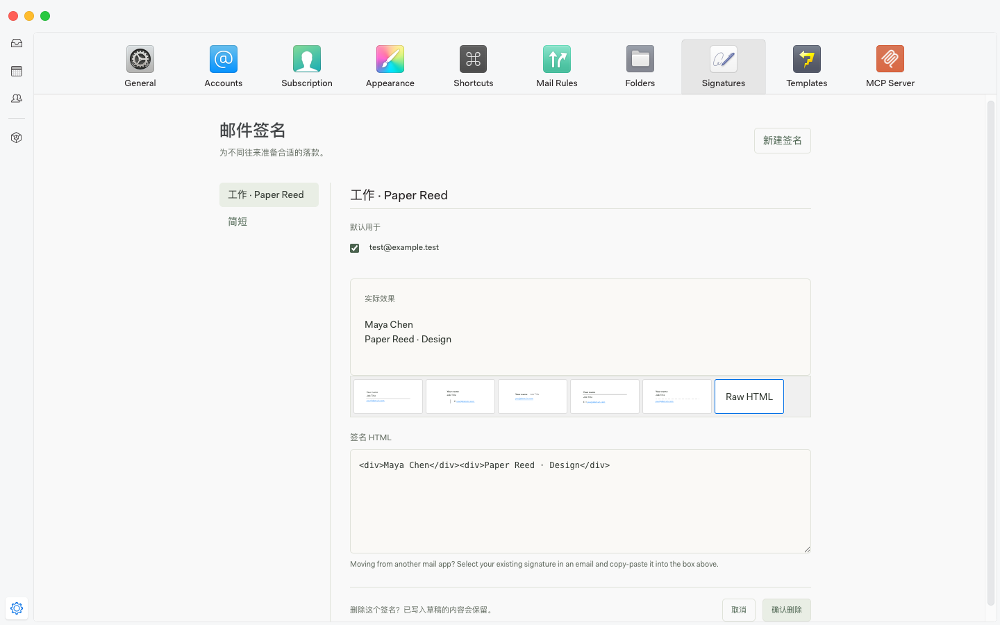
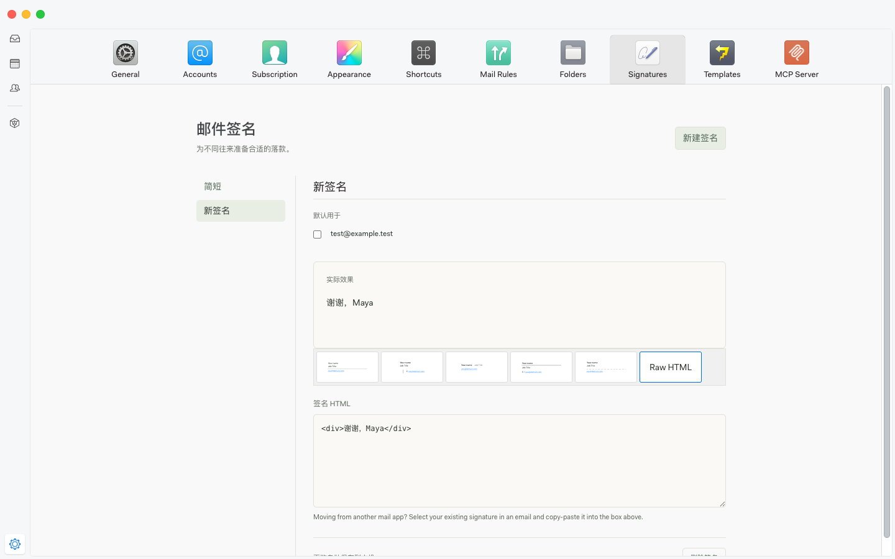
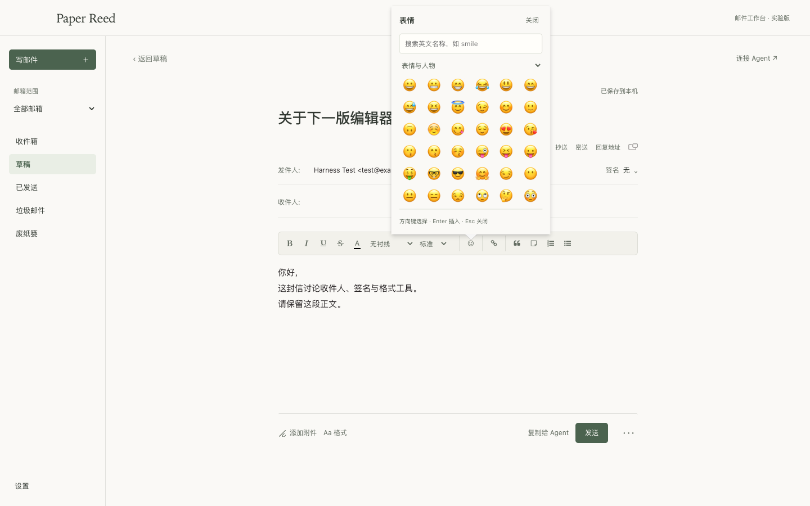
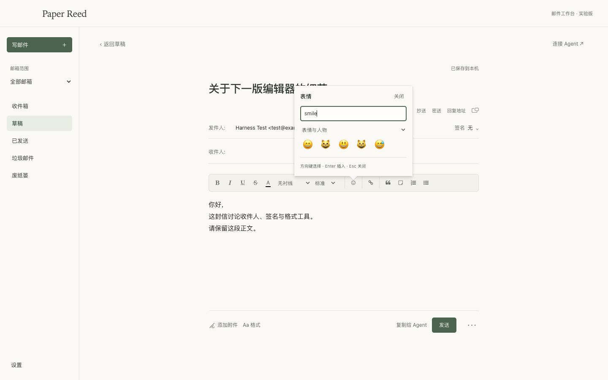
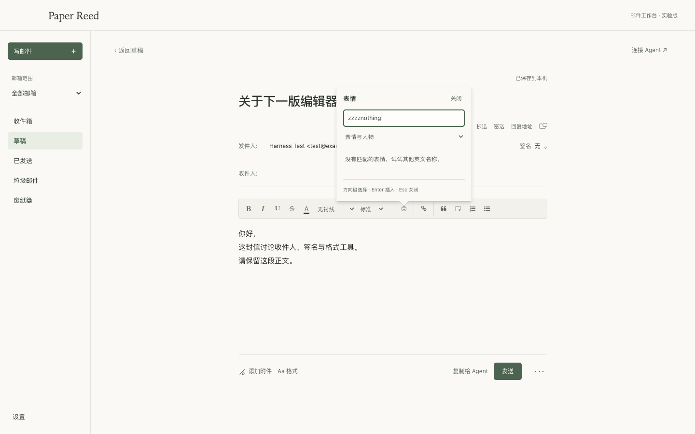

<!doctype html><html lang="zh-CN"><meta charset="utf-8"><meta name="viewport" content="width=device-width,initial-scale=1"><title>Paper Reed 签名与表情</title><style>:root{--foreground:#303730;--muted-foreground:#626b60;--primary:#4b634f;--secondary:#f2f1eb;--border:#dfe2d9;--radius:6px;--font-sans:-apple-system,sans-serif}body{margin:0;font:13px/1.6 var(--font-sans);color:var(--foreground)}nav{display:flex;flex-wrap:wrap;gap:6px;margin-bottom:12px}button{font:inherit;background:transparent;border:1px solid var(--border);border-radius:var(--radius);padding:5px 10px;color:inherit;cursor:pointer}button[aria-pressed=true]{background:var(--secondary);color:var(--primary)}button:focus-visible{outline:2px solid var(--primary)}[hidden]{display:none}figure{margin:0}img{display:block;width:100%;border:1px solid var(--border);border-radius:var(--radius);box-sizing:border-box}figcaption,footer{font-size:12px;color:var(--muted-foreground);margin:6px 0}a{color:var(--primary)}</style><nav><button data-page="signatures" aria-pressed="true">签名管理</button><button data-page="delete-confirmation" aria-pressed="false">删除确认</button><button data-page="signature-new" aria-pressed="false">新建签名</button><button data-page="emoji" aria-pressed="false">表情选择</button><button data-page="emoji-search" aria-pressed="false">表情搜索</button><button data-page="emoji-empty" aria-pressed="false">无结果</button></nav><figure id="signatures" ><figcaption>签名管理 · 实际 Electron 测试窗口</figcaption></figure><figure id="delete-confirmation" hidden><figcaption>删除确认 · 实际 Electron 测试窗口</figcaption></figure><figure id="signature-new" hidden><figcaption>新建签名 · 实际 Electron 测试窗口</figcaption></figure><figure id="emoji" hidden><figcaption>表情选择 · 实际 Electron 测试窗口</figcaption></figure><figure id="emoji-search" hidden><figcaption>表情搜索 · 实际 Electron 测试窗口</figcaption></figure><figure id="emoji-empty" hidden><figcaption>无结果 · 实际 Electron 测试窗口</figcaption></figure><footer>设置外层导航、模板及高级 HTML 编辑仍待收敛。<a href="README.md">验证与边界</a></footer><script>document.querySelectorAll('button').forEach(b=>b.onclick=()=>{document.querySelectorAll('button').forEach(x=>x.setAttribute('aria-pressed',String(x===b)));document.querySelectorAll('figure').forEach(f=>f.hidden=f.id!==b.dataset.page);});</script></html>
